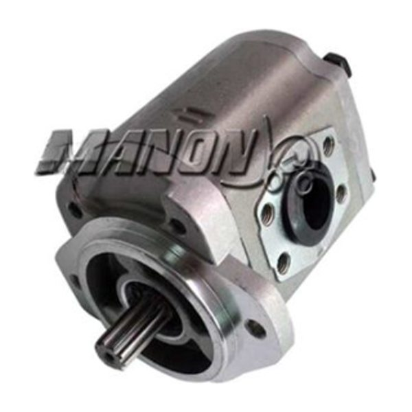

Parts › Hydraulics › 17108-401

Available
Email for a quote
Toyota 17108-401 Hydraulic Pump
| OEM part number | 17108-401 |
| Fits | Toyota |
| Models / notes | 6\7FD10/30 |
| Category | Hydraulics |
| Type | Aftermarket replacement |
Send us the quantity you need and we'll reply with pricing, usually within 24 hours. Not the exact part? We can source it. Send the part number or a photo.